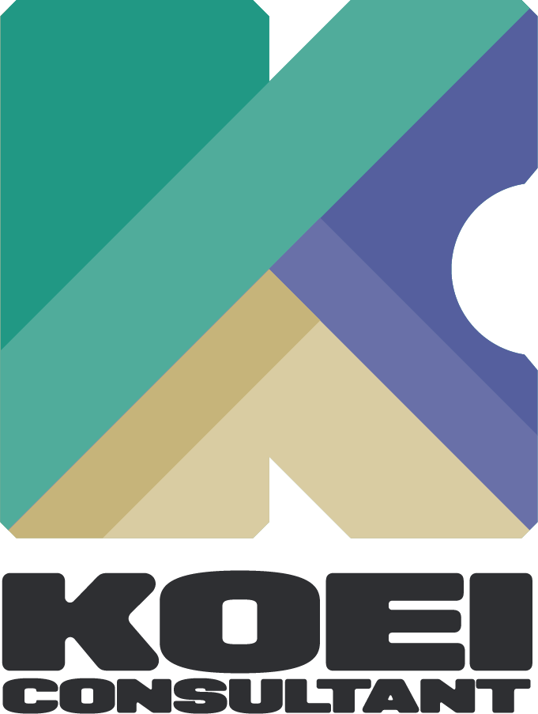

株式会社興栄コンサルタント kintoneパートナー
60年以上の公共事業実績を持つ興栄コンサルタントが、
自治体のDX推進を全力でサポートします。
自治体特有の業務課題を解決します
自治体様の状況に合わせた、段階的な支援プログラム
期間限定で、kintone環境と伴走支援を無償提供いたします。
まずは実際に使ってみて、DXの効果を実感していただけます。
チームビルディングやkintoneの基本機能研修を実施。DX推進の土台を作ります。
職員自身がアプリを作れるようになるための対面研修。自走できる体制を構築します。
業務の優先順位決定からアプリ作成、運用までをアドバイス。効果的なDX推進をサポートします。
操作に関する質問に直接回答し、主管課の負担を軽減。安心して運用できる環境を提供します。
本格導入で50%以上割引キャンペーン実施中！
プログラム終了後、全職員(※)で本格導入される場合は、通常価格よりも50%以上割安な価格でご提供するキャンペーンを実施中です。
※ 総務省が公表する「地方公共団体定員管理調査結果」に示されている、「一般行政計(一般管理+福祉関係)」の人数以上のユーザー数で導入することが適用条件となります。
適用条件や価格等の詳細は下記HPをご確認ください
https://kintone.cybozu.co.jp/jp/government/campaign/
「アプリを作れるか不安」という自治体様向けの、実践的な開発支援パッケージです。
専門コンサルタントが訪問し、一緒にアプリを作成します。
少額随意契約でのスモールスタートが可能です。予算確保の負担を軽減します。
災害支援のDXパートナーとして、復旧・復興に関わる団体を無償で支援します。
興栄コンサルタントは、サイボウズ社が提供する「災害支援プログラム」の趣旨に賛同。災害の復旧・復興に関わる団体・組織を支援するため、サイボウズの災害支援パートナーとして、サイボウズサービスの無償構築支援やkintone導入などの無償コンサルティングを実施します。
実際に導入いただいた自治体様の成果をご紹介します
職員数：約500名
道路補修要望の受付・進捗管理が紙ベースで行われており、情報の共有が困難。住民への回答にも時間がかかっていました。
職員数：約300名
高齢者支援の相談記録がExcelで個別管理されており、ケース会議での情報共有が非効率。引き継ぎ時の負担も大きい状況でした。
職員数：約100名
起案書の決裁に紙と押印が必須で、決裁者不在時は業務が停滞。テレワークの導入も困難な状況でした。
自治体のDX推進に精通したコンサルタントが、
貴自治体の課題とご要望を丁寧にヒアリングいたします。